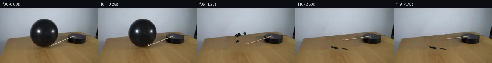

![首帧]()

Round 00
2026-11-05T12:21:57.585568+00:00像素候选变化代码 +231/−0inspection 更新
pixels 9fe66e3727dd0462 · code f71990f4380a7656
查看本轮 generate.py 真实 diff
--- previous/generate.py
+++ current/generate.py
@@ -0,0 +1,231 @@
+"""Photographic pixel continuation using local inpainting and 2-D compositing."""
+from pathlib import Path
+import json
+import math
+import numpy as np
+from PIL import Image, ImageDraw, ImageFilter
+import cv2
+from scipy.ndimage import gaussian_filter, map_coordinates
+from artifact_io import save
+
+ROOT = Path(__file__).resolve().parent
+W, H, S = 256, 144, 4
+source = np.array(Image.open(ROOT / 'first_frame.png').convert('RGB'))
+yy, xx = np.mgrid[:H, :W].astype(float)
+rng = np.random.default_rng(112)
+
+# The original match is a thin diagonal, with a small dark head at the outer end.
+pivot = np.array([194.8, 73.3])
+head0 = np.array([130.2, 98.0])
+length = float(np.linalg.norm(head0 - pivot))
+angle0 = math.atan2(*(head0-pivot)[::-1])
+v = pivot-head0
+u = np.clip(((xx-head0[0])*v[0]+(yy-head0[1])*v[1]) / np.dot(v,v), 0, 1)
+distance = np.hypot(xx-head0[0]-u*v[0], yy-head0[1]-u*v[1])
+rod_mask = ((distance < 2.1) & (xx > 129) & (xx < 196)).astype(np.uint8)*255
+rod_mask[np.hypot(xx-130.2, yy-98)<3.0] = 255
+without_rod = cv2.inpaint(source, rod_mask, 3, cv2.INPAINT_TELEA)
+
+# Original silhouette, measured from its intensity boundary and checked by row.
+contour = [(115,27),(105,28),(98,32),(91,38),(86,44),(82,51),
+ (79,59),(78,65),(78,73),(80,81),(84,88),(91,95),
+ (101,100),(113,102),(124,101),(135,96),(144,87),
+ (149,77),(152,67),(151,58),(148,47),(142,37),
+ (135,31),(125,28)]
+mask_img = Image.new('L', (W*S,H*S))
+md = ImageDraw.Draw(mask_img)
+md.polygon([(int(x*S),int(y*S)) for x,y in contour], fill=255)
+balloon_mask = np.asarray(mask_img.resize((W,H),Image.Resampling.LANCZOS))/255.
+
+# Low-frequency wall lighting fit: never fit to the balloon or table.
+wall_valid = (yy < (79.8-.092*xx)-4) & ~((xx>72)&(xx<158)&(yy>22))
+wall_valid &= (xx<239)
+X,Y = xx/W, yy/H
+features = np.stack([np.ones_like(X),X,Y,X*X,X*Y,Y*Y,X**3,X*X*Y],axis=-1)
+coeff = np.linalg.lstsq(features[wall_valid],source[wall_valid],rcond=None)[0]
+wall = features @ coeff
+# Preserve photographic fine noise via a fixed donor residual rather than new noise every frame.
+wall_residual = source.astype(float) - gaussian_filter(source.astype(float),(1.3,1.3,0))
+wall += map_coordinates(wall_residual, [yy, np.clip(xx+78,0,238), np.zeros_like(xx)],order=1)[...,None]*.45
+
+# Table pixels are resampled from unobstructed wood on the left. Rear-edge-aligned
+# sampling gives continuous perspective and real grain at the revealed area.
+edge = 81.0-.100*xx
+sample_x = np.clip(49+(xx-114)*.43,22,78)
+sample_y = np.clip(yy+.100*(xx-sample_x),0,H-1)
+wood = np.stack([map_coordinates(source[:,:,c].astype(float),[sample_y,sample_x],order=1) for c in range(3)],axis=-1)
+# The existing wood has a darker center and slightly warmer color than its left margin.
+wood += np.stack([-4.-.045*(xx-114), -5.-.025*(xx-114), -5.+.015*(xx-114)],axis=-1)
+table_alpha = np.clip((yy-edge+.45)/1.0,0,1)
+reconstruction = wall*(1-table_alpha[...,None])+wood*table_alpha[...,None]
+
+# Replace exactly the hidden surface and the balloon's broad contact/cast shadow.
+expanded = cv2.dilate((balloon_mask>.04).astype(np.uint8),np.ones((3,3),np.uint8))
+replace_balloon = gaussian_filter(expanded.astype(float),.6)
+replace_balloon = np.maximum(replace_balloon,balloon_mask)
+shadow_strength = np.exp(-(((xx-124)/31)**2+((yy-95)/13)**2)/2)
+shadow_strength *= np.clip((yy-73)/9,0,1)
+shadow_strength *= np.clip((174-xx)/13,0,1)*np.clip((xx-75)/10,0,1)
+# Shadow replacement does not cover the platform.
+shadow_alpha = np.clip((shadow_strength-.10)/.42,0,1)
+replacement = np.maximum(replace_balloon,shadow_alpha)
+replacement *= (xx<175)
+clean = without_rod.astype(float)*(1-replacement[...,None])+reconstruction*replacement[...,None]
+clean = np.clip(clean,0,255)
+
+# Deliberately use the original photograph for the complete intact balloon and shadow.
+intact = without_rod.astype(float)
+
+def rgba_layer():
+ return Image.new('RGBA',(W*S,H*S),(0,0,0,0))
+
+def composite(array,layer):
+ small = np.asarray(layer.resize((W,H),Image.Resampling.LANCZOS)).astype(float)
+ a=small[:,:,3:4]/255.
+ return array*(1-a)+small[:,:,:3]*a
+
+def line(draw,points,fill,width):
… diff truncated; 144 more lines …